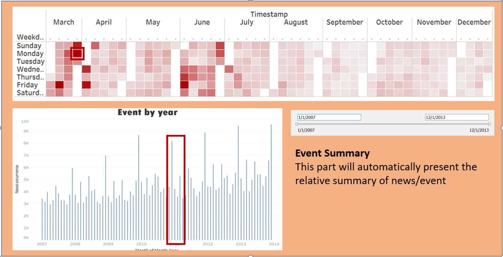
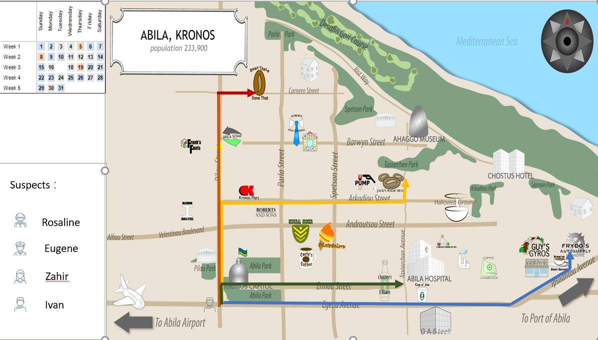
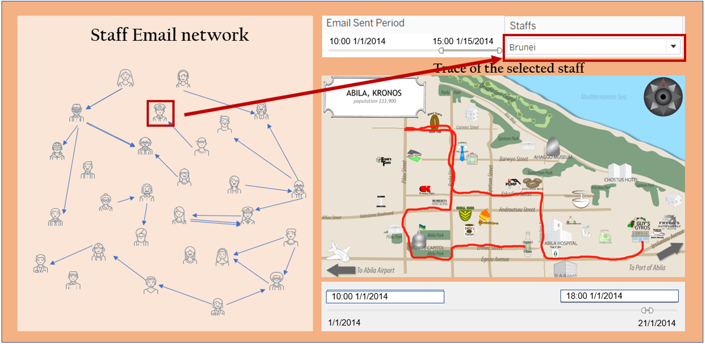

The IEEE Visual Analytics Science and Technology (VAST) Challenge is an annual challenge intent to advance the field of visual analytics through competition.
Our project proposal is based on the background provided by Vast Challenge 2021. The Challenge fictitious a kidnapping event in the island country of Kronos, which happening during a celebration held by Tethys-based GAStech while several employees of the company go missing. A political activist movement names The Protectors of Kronos (POK) might be related.
This Vast challenge requires challengers to help people to understand the complex relationships among people and organizations that may have contributed to these events using visualization techniques.
For mini-challenge1:
Providing a set of current and historical news reports, as well as resumes of numerous GAStech employees and email headers from two weeks of internal GAStech company email, we will be able to identify the relationships among people and organizations, also to picture the relationships and conditions that led up to the kidnapping.
For mini-challenge2:
It requires challengers to identify which GAStech employees made which purchases and identify suspicious patterns of behavior, coping with uncertainties that result from missing, conflicting, and imperfect data to make recommendations for further investigation.
Our dataset is downloaded from the Vast Challenge 2021 website, we only use data provided for mini-challenge 1 and mini-challenge 2, they are mainly a combination of csv files and text files.
For mini challenge 1:
Current and historical news reports
Resumes of numerous GAStech employees
Email headers from two weeks of internal GAStech company email
Factbooks of Kronos and Tethys
The organization structure chart of GAStech – Kronos
For mini challenge 2:
A tourist map of Abila with locations of interest identified
Vehicle tracking data
A list of vehicle assignments by employee
Staffs’ credit card purchases
Preferences as recorded on loyalty cards
The motivation of our project is to utilize multiple visualization techniques to dig out suspicious patterns from dataset and identify the relevant suspects and narrow the range of suspects step by step, which provides proof or evidence for police to trace abnormal scenarios or inconspicuous details.
Below are some of the proposed visualization approaches that we would be applying in our application.
For EDA Analysis, we consider using networking visualization and calendar visualization to research and dig out suspicious details for further analysis.
Networking Visualization
Since Mini-Challenge 1 looks at the relationships and conditions that led up to the kidnapping, we decide to use networking visualization to design a networking graph. The network graph will present the relationships between GAStech company’s employees, together with the email networking which allows us to study corporate email traffic to see personal and official relationships between employees.
Calendar Visualization
The calendar chart is intended to research the important news events since the establishment of the company and show the frequency news events occurred during the 15 days preceding the hijacking, try to find the relationships between events.
Geographical Visualization
Through the above data visualization methods to reduce the scope of suspects and then lock relevant suspects, we track by using the method of map visualization suspect vehicle trajectory between 1.1 to 1.19 in 2014 and related credit card consumption records, through the data comparison, observe whether abnormal consumption amount is too large or suspect haunts of place, provide evidence and clues for the police to search for missing persons or identify suspects.
Storyboard 1: Event timeline, event summary and activity calenda
This graph will demonstrate the events using heatmap and bar chart, we can choose the time period using control penal, and when we select a time period the app will automatically output the event summary during this time.



Since this course aims at pursuing the good command of R language, for the display part we will choose R to implement our visualization. To be more precise, we will use R Markdown and the other relevant package like spgwr, pryr, gwmodel and tidyverse.
The visualizations will be built as a web application using Shiny that will thus allow for user interactivity. The interactive features include sliders, dropdown menus, date range inputs and zoom-ins.
ggplot2 is a well-established graphical package that provides a more systematic means of plotting graphs via leveraging on the grammar of graphics. Given the extensive involvement of visualization.
Plotly’s R graphing library makes interactive, publication-quality graphs. Examples of how to make line plots, scatter plots, area charts, bar charts, error bars, box plots, histograms, heatmaps, subplots, multiple-axes, and 3D (WebGL based) charts.
The tidyverse is an opinionated collection of R packages designed for data science. All packages share an underlying design philosophy, grammar, and data structures.